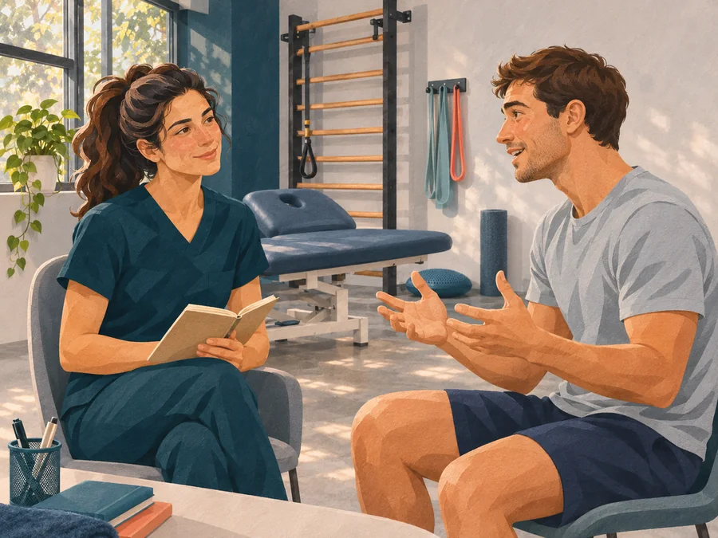
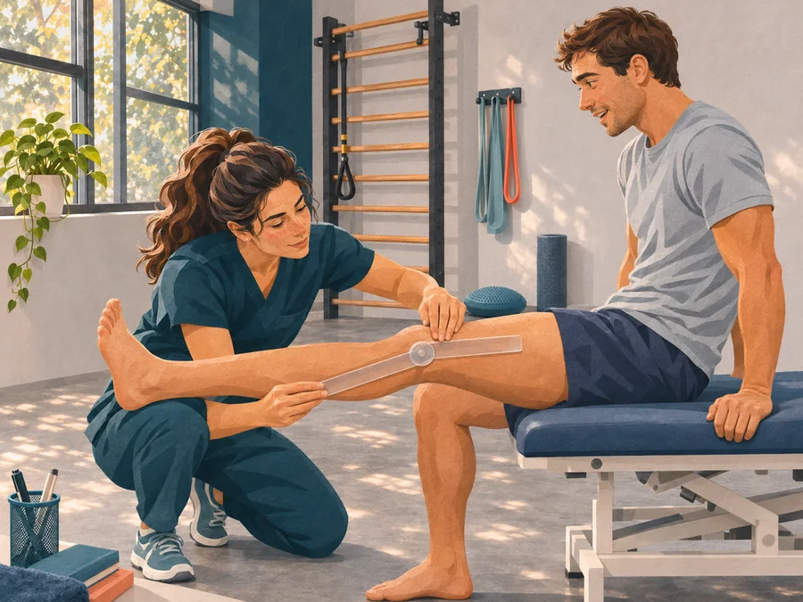
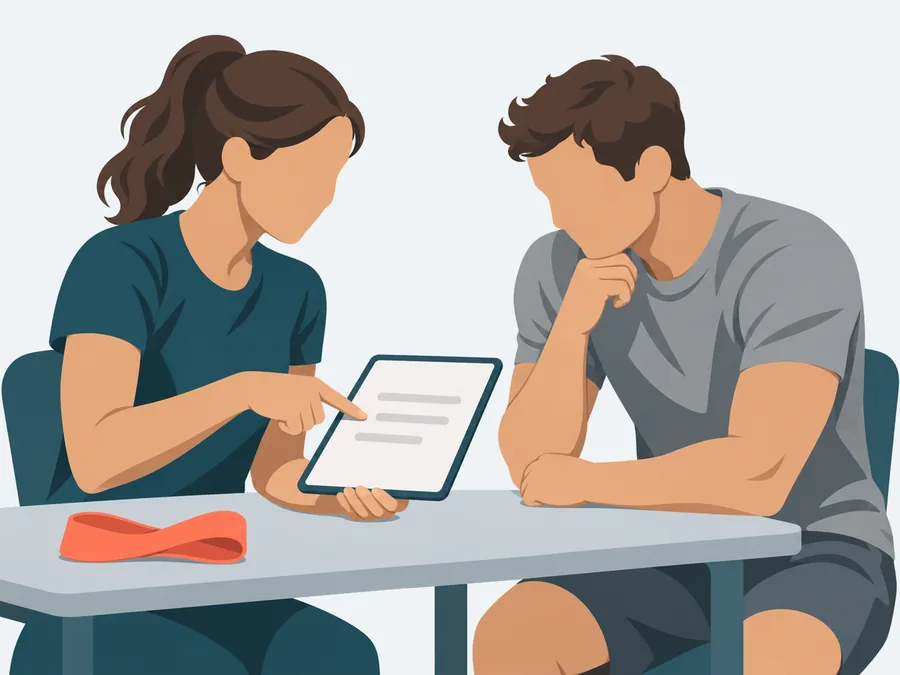

Kinesiología y rehabilitación deportiva
¿Qué te molesta? Empecemos por ahí.
Tocá la zona en el cuerpo y mirá por qué consultan. Después pedís turno en cuatro pasos.
Zona elegida
Cuello y hombro
Medimos cuánto levantás el brazo y la fuerza al empujar y al tirar.
Motivos de consulta frecuentes
Pedir turno por cuello y hombroZona elegida
Espalda
Medimos cuánto te flexionás y rotás, y cómo se sostiene el tronco.
Motivos de consulta frecuentes
- Dolor lumbar después de estar mucho tiempo sentado
- Molestia al agacharte o al levantar peso
- Rigidez al levantarte a la mañana
Zona elegida
Cadera
Medimos la movilidad de la cadera y la fuerza de glúteos y piernas.
Motivos de consulta frecuentes
Pedir turno por caderaZona elegida
Rodilla
Medimos cuánto flexiona y extiende la rodilla, y la fuerza del muslo.
Motivos de consulta frecuentes
Pedir turno por rodillaZona elegida
Tobillo y pie
Medimos la movilidad del tobillo y el equilibrio al apoyar.
Motivos de consulta frecuentes
- Torcedura de tobillo reciente o que se repite
- Dolor en el talón o en la planta al correr
- Inestabilidad al apoyar
Zona elegida
Codo y mano
Medimos la movilidad de codo y muñeca, y la fuerza de agarre.
Motivos de consulta frecuentes
- Dolor en el codo al cargar o al jugar al pádel
- Molestia en la muñeca al usar el teclado
- Recuperar fuerza después de una inmovilización

El centro
Medimos antes de decidir.
Tu plan sale de cómo te movés vos, no de una receta general.
Tu primera visita
Una hora para entender qué te pasa.
Charlamos, medimos y decidimos juntos cómo seguir. Esto es lo que va a pasar.

Charlamos
Nos contás qué te pasa, desde cuándo y qué querés volver a hacer.
Te llevásUn motivo de consulta claro

Medimos
Registramos cuánto se mueve cada articulación y cuánta fuerza tiene la zona.
Te llevásDatos de tu movimiento y tu fuerza

Armamos el plan
Te explicamos qué vemos, qué ejercicios proponemos y cuántas sesiones estimamos, y lo acordamos con vos.
Te llevásUn plan acordado con vos
Lo que hacemos.
Ver todos los serviciosEvaluación de movimiento
Tu primera consulta: charlamos, medimos y armamos el plan.
Ver el servicio →Kinesiología traumatológica
Tratamiento de lesiones de músculos, tendones y articulaciones.
Rehabilitación posquirúrgica
Seguimiento después de una operación, con la indicación de tu médico.
Readaptación deportiva
Volver al deporte con criterios claros de fuerza, movilidad y gesto.
Quiénes te atienden.
Un equipo chico, con una persona de referencia en todo tu tratamiento.
Lic. Marina Altamirano
Kinesióloga deportiva
Matrícula ficticia 00.001Lic. Joaquín Benavídez
Kinesiología traumatológica y posquirúrgica
Matrícula ficticia 00.002Lic. Sol Ferreyra
Readaptación deportiva y ejercicio terapéutico
Matrícula ficticia 00.003
Antes de venir.
Con tu cobertura
Te damos el comprobante para que presentes el reintegro en tu obra social o prepaga. Antes de tu primera visita te contamos cómo hacerlo.
Sin cobertura
Pagás cada sesión al terminarla. Los valores te los pasamos por WhatsApp cuando pedís turno.
¿Necesito orden médica?
Para la primera consulta no. Si tu cobertura la pide para el reintegro, te avisamos antes de que vengas.
¿Cuánto dura la primera consulta?
Alrededor de una hora: charla, mediciones y explicación del plan.
¿Qué tengo que llevar?
Ropa cómoda para moverte, los estudios o informes que tengas y, si te operaron, la indicación de tu médico.
¿Atienden con obra social o prepaga?
Con reintegro: te damos el comprobante para que lo presentes en tu cobertura. Consultanos antes de venir.
¿Cuántas sesiones voy a necesitar?
Depende de cada caso. Lo definimos con vos después de la evaluación y no prometemos plazos.
¿Cómo cambio o cancelo un turno?
Avisanos por WhatsApp con 24 horas de anticipación y te ofrecemos otro horario.
Elegí un horario que te quede cómodo.
Son cuatro pasos. Después podés cambiar el turno avisando con 24 horas de anticipación.
Pedir turno